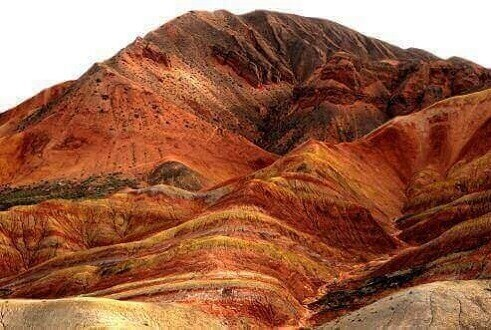
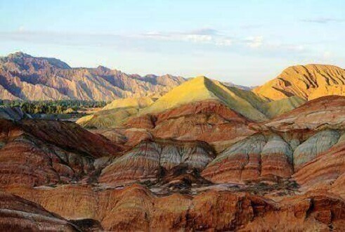
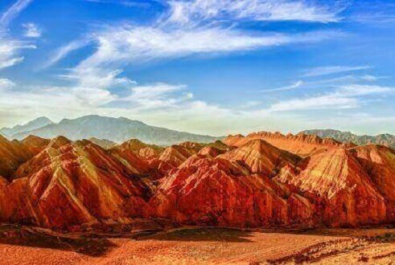

morly旅游圈
张掖，甘肃省省辖市。以“张国臂掖，以通西域”而得名，位于中国甘肃省西北部，河西走廊中段。古称“甘州”，即甘肃省名“甘”字由来地，素有“桑麻之地”、鱼米之乡之美称。盛产小麦、玉米、水稻、豆类、油料、瓜果、蔬菜，工业有煤炭、机械、纺织、酿造等10余个部门。土特产品有元葱、苹果梨、乌江米、红枣、发菜、丝路春酒等。 2016年11月，张掖市被国家旅游局评为第二批国家全域旅游示范区。
张掖丹霞地质公园(强烈推荐)
丹霞地质构造是岩石堆积形成的，它是指红色砂岩经长期风化剥离和流水侵蚀，加之特殊的地质结构、气候变化以及风力等自然环境的影响，形成孤立的山峰和陡峭的奇岩怪石，主要发育于侏罗纪至第三纪的水平或缓倾的红色地层中，是巨厚红色砂、砾岩层中沿垂直节理发育的各种丹霞奇峰的总称。张掖祁连山丹霞主要由红色砾石、砂岩和泥岩组成，有明显的干旱、半干旱气候的印迹，以交错层理、四壁陡峭、垂直节理、色彩斑斓而示奇，它是一个以自然风光为主的自然风景区，集广东丹霞山的雄、险、奇、幽、美于一身，揽新疆五彩城的色彩斑斓为一体。
最佳时间: 观赏丹霞地貌的最佳时间就是雨后，这样经过雨水的湿润，色彩更加绚丽明亮吸引人的眼球。
此地是众多电影的取景地，所以你有机偶遇你的女神、男神哦^_^
友情提示：
张掖，属于一个比较冷门的旅游城市，不过在这才能够真正的体验到天苍苍，野茫茫，风吹草低现牛羊的壮丽景色，成群的牛羊自由的奔跑在草原之上，这种开阔的景色真不是别的地方能够比拟的，漫步于这样的草原之上，远离城市的喧嚣，忘却一切物欲横流的世俗生活，真的是做到了回归大自然一般。
内容整理至网络，如有侵权，请联系我们！1255394075@qq.com
  